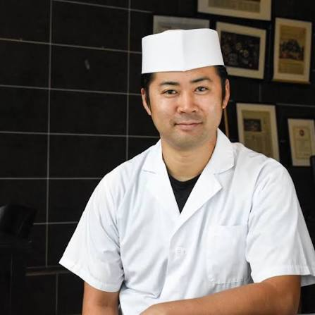
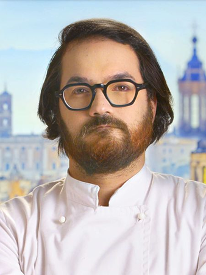
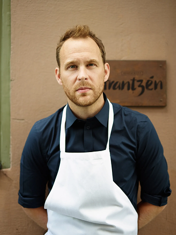
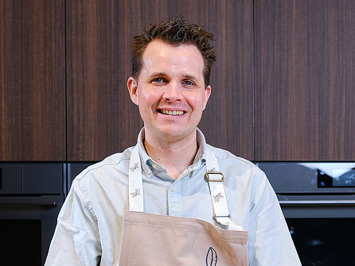

About Us
Category: Misc
Our Goal
We believe eating well shouldn't cost a fortune or take all day. With four Michelin-starred chefs on board, our mission is to bring restaurant-quality cooking into your everyday kitchen. We create quick, affordable and healthy recipes without compromising on flavour. Whether you're a kitchen rookie or a seasoned home cook, we've got something for you. After all, the future is now, and it tastes delicious! Good news, everyone!

KUNIYOSHI OHTAWARA, HEAD CHEF

Meet Our Head Chef, Kuniyoshi Ohtawara
Leading our kitchen is Kuniyoshi Ohtawara, a Tokyo-born chef with a passion for bringing Japanese cuisine to the world. Based in the Netherlands since 2005, he has dedicated his career to introducing Dutch audiences to the flavours and traditions of Japan.
He is also the head chef of Hokkai Kitchen in IJmuiden, where his culinary philosophy meets the fresh catch of the North Sea. Hokkai means "Northern Sea", a fitting name for a restaurant built around locally sourced seafood. At our kitchen, Kuniyoshi brings that same expertise, creativity and attention to detail, helping us turn everyday ingredients into something extraordinary.
LUCIANO MONOSILIO

Meet Our Chef, Luciano Monosilio
Bringing a taste of Rome to our kitchen is Luciano Monosilio, one of Italy's most celebrated contemporary chefs. Born in 1984 in Albano Laziale, Luciano began cooking at just 10 years old and went on to earn a Michelin star at the age of 27. Best known as the "King of Carbonara", he has built his reputation on turning traditional Italian dishes into something extraordinary while staying true to their roots.
Today, he runs Luciano Cucina Italiana in the heart of Rome, where tradition meets creativity. At our kitchen, Luciano brings his passion for Italian cuisine, fresh ingredients and clever cooking techniques to help make everyday meals a little more special.
BJÖRN FRANTZÉN

Meet Our Chef, Björn Frantzén
Bringing Scandinavian creativity and world-class expertise to our kitchen is Swedish chef Björn Frantzén. Born in Stockholm in 1977, Björn has built an international reputation for combining traditional Nordic ingredients with French techniques and Japanese influences. He is the founder of the Frantzén Group and currently leads three restaurants, each holding three Michelin stars: Frantzén in Stockholm, Zén in Singapore and FZN in Dubai.
Known for his attention to detail and innovative approach to cooking, Björn believes that great food starts with exceptional ingredients and a willingness to experiment. At our kitchen, he brings that same passion for quality and creativity, showing that extraordinary cooking can inspire even the simplest everyday meals.
MICHAEL NIZZERO

Meet Our Chef, Michael Nizzero
Bringing years of Michelin-starred experience and a passion for modern French cuisine to our kitchen is Belgian-born chef Michael Nizzero. Throughout his career, Michael has worked in some of the world's most prestigious kitchens, including the three-Michelin-starred Waterside Inn and The Ritz London. Between 2011 and 2015, he led the kitchen at Hostellerie La Briqueterie in France, where he earned and maintained a Michelin star, becoming one of France's youngest Michelin-starred chefs at the time.
Today, Michael works as an international consultant chef, sharing his expertise through culinary masterclasses and mentoring aspiring chefs. At our kitchen, he brings his focus on fresh ingredients, seasonal flavours and refined French techniques to make exceptional cooking accessible to everyone.